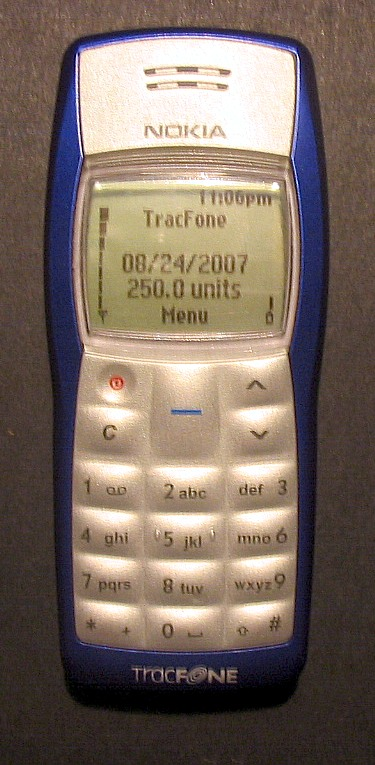

BareBoard Autopsy Report · Mobile Phones
Nokia 1100 Likely
The best-selling mobile phone in history — roughly a quarter of a billion units Android Authority — and the purest expression of Nokia's DCT4 entry-level platform. Every claim below comes from public records: Wikipedia, Nokia's own service documentation, and contemporary reporting. We have never owned, opened, booted, probed, tested, or disassembled a Nokia 1100.

What is this thing?
The Nokia 1100 is a dual-band GSM (900/1800 MHz) candybar feature phone released in 2003 Wikipedia. The original global model is the RH-18; the U.S. variant, the 1100b, is the RH-36 Likely Wikipedia. It was designed for emerging markets and first-time phone buyers: a monochrome 96×65-pixel display, a famously durable one-piece keymat, a flashlight, and a standby time measured in weeks rather than hours Wikipedia.
Its historical significance is scale. Contemporary reporting credits the 1100 with roughly 250 million units sold, making it the best-selling mobile phone — and one of the best-selling consumer electronics products — of all time Likely Android Authority.
Timeline
- 2003 — Nokia 1100 released (RH-18) Wikipedia.
- 2003–2005 — U.S. 1100b (RH-36) variant sold for GSM 850/1900 networks Likely Wikipedia.
- 2005 — Succeeded in Nokia's lineup by the Nokia 1110 Wikipedia.
- 2009 — 1100 discontinued Wikipedia.
- 2026-09-27 — This report published from public records; no unit on our bench.
Outside
B Two softkeys + 5-way-style Navi key cluster
C One-piece dust-resistant keymat, 12-key numeric pad
D Interchangeable Xpress-on front covers (user-swappable) Wikipedia
E Flashlight (dedicated, top edge)
F Nokia Pop-Port / charger barrel at base (model-specific accessory port)
G Removable rear cover; BL-5C battery (850 mAh) underneath Wikipedia
Dimensions are approximately 106 × 46 × 20 mm at 93 g Wikipedia. The industrial design is deliberately minimal: no camera, no Bluetooth, no infrared — the bill of materials was optimized for cost and durability above all else Likely Wikipedia.
Board
Public architecture: the 1100 is a DCT4-generation Nokia built around the UPP2M baseband processor (ARM7 core), with 256 KB of SRAM and 2 MB of storage Likely Nokia service documentation via ManualsLib. Nokia's own service material for DCT4 devices of this era documents the standard service blocks: the DCT4 service connection, the UEM (power management / audio / charging) ASIC, UPP and flash memory, and the RF section Nokia service documentation via ManualsLib.
Chips
| Ref | Marking / identity | Role | Confidence | Dig deeper |
|---|---|---|---|---|
| — | UPP2M (ARM7-based) | Baseband processor: runs the GSM stack, UI, and peripherals | Likely | Nokia DCT4 service documentation (ManualsLib) — no public datasheet located |
| — | UEM | Power management, charging, audio codec ASIC | Likely | Nokia DCT4 service documentation (ManualsLib) — no public datasheet located |
| — | 2 MB flash (exact die marking unknown) | Firmware + user storage | Likely | Capacity per service documentation; die-level identity awaits the bench — no public datasheet claimed |
| — | 256 KB SRAM | Working memory | Likely | Per service documentation; packaging unknown — no public datasheet claimed |
| — | RF section (discrete) | Dual-band GSM 900/1800 transceiver + power amplifier | Likely | Service documentation, RF section — component identities await the bench |
FCC
No FCC filing for the Nokia 1100 (RH-18 or RH-36) has been located in public records Unknown. The identifier QTLRH-6 is sometimes associated with Nokia DCT4 devices in third-party databases, but no filing naming the 1100 has been reviewed, so we do not map that grantee code to this device. This section will be completed from the FCC OET database when a unit — and its label's FCC ID — reaches our bench.
Debug / service modes
Nokia's DCT4 service ecosystem used a wired service connection (later standardized as the Easy Flash / FBUS / MBUS interface family) for factory flashing and diagnostics Nokia service documentation via ManualsLib. We describe this only at the level Nokia itself documented it: a service connector exists for authorized service use. We have never connected to one, we publish no pinout, no baud rate, no procedure, and no instructions for defeating any lock or protection. We listen; we don't knock.
Public findings & what we didn't do
- ✅ Assembled the public architecture (DCT4 / UPP2M / 256 KB SRAM / 2 MB storage) from Nokia service documentation ManualsLib.
- ✅ Distinguished the RH-18 global model from the RH-36 (1100b) U.S. variant Wikipedia.
- ✅ Confirmed no FCC filing naming the 1100 has been located — stated plainly instead of guessing.
- ❌ We have not opened, booted, probed, or photographed a Nokia 1100 ourselves.
- ❌ We have not verified the flash die identity, RF component markings, or PCB revision.
- ❌ We have not tested the service interface, measured power, or captured any boot log.
By the numbers
| Metric | Value | Source |
|---|---|---|
| Units sold (reported) | ≈ 250 million | Likely Android Authority |
| Display | Monochrome, 96×65 px | Wikipedia |
| Network | Dual-band GSM 900/1800 (RH-18); 850/1900 (RH-36) | Wikipedia |
| Battery | BL-5C, 850 mAh (removable) | Wikipedia |
| Weight / size | 93 g; 106 × 46 × 20 mm | Wikipedia |
| SRAM / storage | 256 KB / 2 MB | Likely Service documentation |
| Platform | Nokia DCT4; UPP2M (ARM7) | Likely Service documentation |
Glossary
| DCT4 | Nokia's fourth-generation digital core technology platform for GSM handsets (early 2000s). |
| UPP | Universal Phone Processor — Nokia's baseband SoC family; the 1100 uses the UPP2M variant. |
| UEM | Universal Energy Management — Nokia power/charging/audio ASIC paired with UPP devices. |
| RH-18 / RH-36 | Nokia internal type designations: RH-18 is the global 1100, RH-36 the U.S. 1100b. |
| Xpress-on | Nokia's user-swappable front-cover system. |
Sources & confidence
- Nokia 1100 — Wikipedia — model identity, dates, specs, variants (secondary; corroborated).
- Nokia DCT4 service documentation (PDF via ManualsLib) — platform architecture, service blocks (primary manufacturer material, mirrored).
- Android Authority — best-selling phone reporting — 250M-unit figure (secondary press).
| Claim | Confidence | Basis |
|---|---|---|
| Model identity, release/discontinuation dates, specs | Likely | Corroborated secondary records; no manufacturer press release located |
| DCT4 / UPP2M / 256 KB SRAM / 2 MB storage | Likely | Nokia service documentation (mirrored copy); die-level detail unverified |
| 250M units sold | Likely | Widely repeated press figure; Nokia never published an audited total we could find |
| FCC ID | Unknown | No filing naming the 1100 located |
| Board-level component identities | Unknown | Awaits the bench |
Legal note
This report is a transformative educational summary of publicly available records. Product names and marks belong to their owners. We describe only publicly documented service interfaces at a high level; we publish no lock-bypass, authentication-defeat, firmware-extraction, or unsafe service procedures. Our posture: we listen, we don't knock.
Related reports
- Nokia 1110 / 1110i — the 1100's DCT4 successor
- Nokia 1200 — the later ultrabasic DCT4 descendant
- Nokia 3210 — the DCT3 classic that preceded it